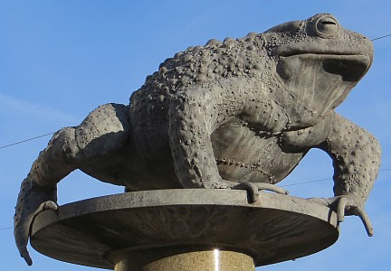
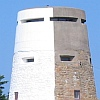

Le Ménage ès Feuvres,
St. Ouën.
Lé 5 d'août, 1978.
Moussieu L'Rédacteu,
En liêsant les gâzettes dé tchiques mais d'vant m'n arrivée en Jèrri ch't êté, j'viyais dans la cheinne du seize dé mar qué l'Député Mdme. Enid Quénault d'St. Brélade dîsait dans L's Êtats qué des gens tchi sont endgiâbliés d'la jouaîthie du ji appelé "Bingo" amènent lus mousses au ji auve ieux, et tch'il est souvent onze heuthes, et tchiquefais mînniet, quand i' tchittent à jouer pour lus en r'aller siez ieux auve les êfants endormis. N'en v'la-t-i' eune manniéthe d'êl'ver d's êfants?
"Bingo" est un jeu tch'a eune attraction extraordinnaithe pour un tas d'monde et, tchuthieusement assez, pour les femmes en partitchulyi. Et ch'est un jeu tchi rapporte un gros profit. Comme j'vouos l'dîsais dans ma lettre du huit d'avri, 1978, les "Chevalier de Colomb" d'la ville dé Wyandotte en Améthique où'est qué j'ai vêtchu pour 23 ans, bâtissîdrent lus templ'ye, eune înstitution considéthabl'ye, auve lé profit d'un "Bingo" un coupl'ye d'fais la s'maine. Ch'est contre la louai en Améthique d'y jouer, sans doute, mais pour tchique raîson l's autorités n'ont janmais êprouvé à l's arrêter, et l'jeu continnue au jour d'anniet.

La gâzette du six d'avri nouos donne la bouanne nouvelle qué les crapauds c'menchent à s'montrer dans l'Ile. Et les taupes étout. J'savais bein qu'les crapauds avaient presque dispathu, mais jé n'savais pon qu'les taupes étaient dév'nues rares. J'avais r'gret d'vaie eune êcarcité d'crapauds viyant qu'ches vièrs anmîns sont fanmeux au point d'êt' appelés des Jèrriais. Et jé l's ai connus toute ma vie. J'm'èrsouveins d'en aver veu un tas dans les clios dans l'temps d'la dêfouithie des patates à la frouque, et qué les garçons les happaient à la main pour l's env'yer sus les femmes tch'étaient à glianer et tch'en avaient peux ouaithe tch'i' sont absolûment innoffensifs. Y'en avait tchi criyaient tch'il' êclyichaient du v'lîn, mais ché n'tait pon vrai. Et j'avais horreu d'en vaie des pouôrres baloques enfroutchis par accident par lé dêfoueux.
Y'avait même des ditons entouôrre lé fanmeux crapaud. Quand un homme 'tait hardi pauvre, nou dîsait tch'il avait "autant d'sou comme un crapaud a d'puches!" Quand tchitch'un restaient d'houors bein tard au sé, nou dîsait tch'il 'tait d'houors "jusqu'ès p'tits crapauds!" I' pathaît qué dans les touos vièrs temps l'Ile en 'tait remplyie, d'crapauds, et y'en avait cèrtainement tout pliein par les c'mîns quand j'tais mousse. Y'en avait mème dans l'pits siez nous à La Forge, et j'ai veu ma M'mèe en ramonter auve l'ieau dans l'sieau auve lé gîndas du pits. I' fliottaient dans l'haut du sieau et ou m'ttait sa main souos l'crapaud et l'souôl'vait hors du sieau.
Ch'est r'mèrquabl'ye qué l'crapaud n'existe pon dans l's aut' Iles dé la Manche, et ché s'sait danmage dé l'vaie dispathaître tout à fait. Ch'est don auve pliaîsi qué j'vai la bouanne nouvelle dé sa renaissance. J'espéthe qué l'pouôrre dgiâtre, tch'est supposé d'ouï cône, étha assez d'avis pour né s'promener pon dans les rues et êt' êcrâsé par les motos.
Quant à la taupe, y'en a tréjous assez. Dans l's Iles, nou-s-en trouve en Jèrri et en Aur'gny seulement, et y'en a d'néthes et d'grises et d'blianches (les blianches sont pûtôt jaunâtres). La taupe est supposée n'vaie pon, et d'pis qué l'crapaud n'ouait pon, y'a un vièr diton tchi nouos dit: "Si taupe viyait et crapaud entendait, homme dé tèrre né vivrait!" Comme la d'meuthe ès taupes est souos la biête, nou pâle tchiquefais des morts comme étant dans "L'Rouoyaume des Taupes".
Quand j'tais tout mousse, y'avait acouo des gens tchi siévaient l'mêtchi dé "taûpîn" (ou "taûpyi"), ch'est à dithe tch'i' prannaient des taupes, et y'en avait tchi v'nait vaie Papa à la forge dé temps en temps en pâssant, mais i' n'y'a pus d'taûpîns (ou taûpièrs) en Jèrri comme dans l'temps pâssé.

Lé bieau portrait du Moulîn d'Rôzé dans la gâzette mé ramémouaithe qué quand j'tchittis Jèrri à bord du "Hantonne" auprès la dgèrre (en 1919) pour m'en aller au Cannada, j'èrgardis l's aubes du Moulîn d'St. Ou, tch'allaient bouan rond chutte matinnée-là, jusqu'à pèrte d'veue. Quand jé r'vîns en Jèrri en mil neu chent quarante-six, dans l'"Hantonne" étout, la preunmié chose tchi m'frappit en r'gardant pour lé moulîn et l'cliochi d'l'églyise, 'tait qué l's aubes du moulîn avaient dispathu. Jé n'pouvais pon en r'vénîn! Ch'tait l'preunmié sîngne tchi m'avèrtissait qué l'Jèrri d'mes p'tits jours n'était pus.
J'dév'thais p't-êt' vouos explyitchi qué quand j'tais mousse un tas d'gens pâlaient des deux stînmes tchi v'naient touos les jours d'Angliétèrre comme lé "Ouêmue" (pour "Weymouth") et l'"Hantonne" (pour "Southampton") pûtôt qué d'les mentionner par lus noms. Un vièr anmîn mé dîsait qué l'"Ouêmue" allait pus vite qué l'"Hantonne" viyant tch'il avait quat' cheunm'nées - et qué l'"Hantonne" n'en avait qu'trais!
George d'La Forge
Viyiz étout:
{kind=link}